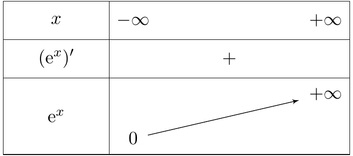
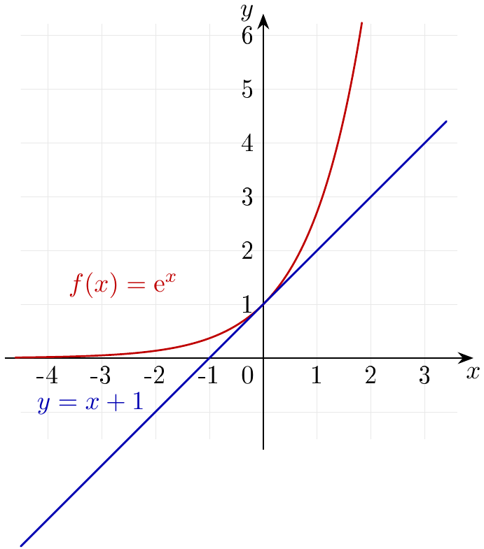
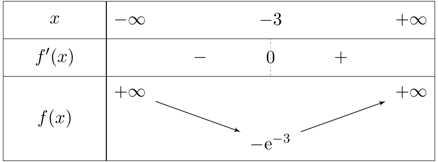
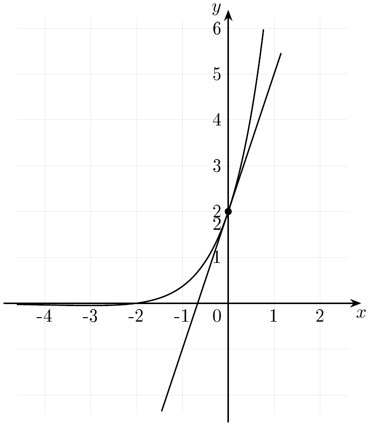

Chapitre 10 : Fonction exponentielle
Première spécialité · Chapitre 9 — Fonction exponentielle · cours de Frederik de Peyrelongue
I. Définition de la fonction exponentielle
Définition
S'il existe une fonction $f$ définie et dérivable sur $\R$ vérifiant, pour tout nombre réel $x$, $f'(x)=f(x)$ et $f(0)=1$, alors la fonction ne s'annule jamais.
$g(x)=f(x)\times f(-x)$.
La fonction $g$ est le produit de deux fonctions dérivables sur $\R$ : elle est donc dérivable sur $\R$.
La fonction dérivée de $g$ est donc la fonction nulle. La fonction $g$ est donc constante, d'où
On suppose qu'il existe $a\in\R$ tel que $f(a)=0$ : on a alors $g(a)=f(a)\times f(-a)=0$, ce qui est absurde car $g$ est constante.
Conclusion : la fonction $f$ ne s'annule jamais et
Il existe une unique fonction $f$ définie et dérivable sur $\R$ vérifiant, pour tout nombre réel $x$, $f'(x)=f(x)$ et $f(0)=1$. Cette fonction est la fonction exponentielle, définie sur $\R$, et on l'a notée $f(x)=\exp(x)$ ou $f(x)=\e^{x}$.
L'existence de cette fonction est admise.
vérifiant, pour tout nombre réel $x$, $f'(x)=f(x)$ et $f(0)=1$.
On a vu précédemment que la fonction $f$ ne s'annule jamais : je peux donc définir sur $\R$ la fonction quotient
Cette fonction est bien définie et est dérivable sur $\R$ comme quotient de deux fonctions dérivables.
La fonction $d$ est donc constante, d'où
D'où
d'où l'unicité !
Propriété algébrique
- $\forall x,y\in\R$, $\e^{x+y}=\e^{x}\times\e^{y}$ (1)
- $\forall x\in\R$, $\e^{-x}=\dfrac{1}{\e^{x}}$ (2)
- $\forall x,y\in\R$, $\e^{x-y}=\dfrac{\e^{x}}{\e^{y}}$ (3)
- $(\e^{x})^{n}=\e^{nx}$, avec $n\in\N$ (4)
Preuve de (1) : soit
La fonction $f$ est bien définie, car $\e^{x}$ ne s'annule jamais.
Avec $v(x)=\e^{x}$, $v'(x)=\e^{x}$, $u(x)=\e^{x+y}$, $u'(x)=\e^{x+y}$ :
La fonction $f$ est constante, donc égale à $f(0)=\e^{y}$ :
Donc
On pose $y=-x$ :
d'où
Dans (1), on change $y$ en $-y$ :
Simplifier l'écriture des nombres suivants :
II. Étude de la fonction exponentielle
Signe de la fonction exponentielle
Pour tout nombre réel $x$, $\e^{x}>0$.
Dans $\R$, un carré est toujours positif ou nul. Or la fonction exponentielle ne s'annule jamais sur $\R$, donc, pour tout nombre réel $x$, $\left(\e^{\frac{x}{2}}\right)^{2}>0$, d'où $\e^{x}>0$.
Donner le signe des expressions suivantes : $\e^{-x}$ et $-\e^{-3x-1}$.
Variations
La fonction exponentielle est strictement croissante sur $\R$.
En effet, $(\e^{x})'>0$, car $(\e^{x})'=\e^{x}>0$.


La dérivée de la fonction exponentielle est la fonction exponentielle, qui est croissante : on a donc une dérivée qui est croissante aussi. Donc la fonction exponentielle est une fonction qui « accélère » : la pente des tangentes devient de plus en plus grande !
Dériver les fonctions suivantes :
- $f(x)=5x-2\e^{x}$
- $g(x)=(x+1)\e^{x}$
- $h(x)=\dfrac{\e^{x}}{x}$
III. Propriété de la fonction exponentielle
Pour tous réels $a$ et $b$, on a :
- $\e^{a}=\e^{b}\iff a=b$ ;
- $\e^{a}<\e^{b}\iff a<b$.
donc :
- deux images égales ont nécessairement le même antécédent ;
- deux nombres et leur image sont classés dans le même ordre.
Résoudre dans $\R$ l'équation $\e^{x^{2}-3}-\e^{-2x^{2}}=0$.
La fonction exponentielle est strictement croissante : chaque image a un unique antécédent.
Donc $x=-1$ ou $x=1$, et
Résoudre dans $\R$ l'inéquation $\e^{4x-1}\geqslant 1$.
d'où
Soit $f$ la fonction définie sur $\R$ par $f(x)=(x+2)\e^{x}$.
- Calculer la dérivée de la fonction $f$.
- Dresser le tableau de variations de la fonction $f$.
- Déterminer une équation de la tangente à la courbe au point d'abscisse $0$.
- Tracer la courbe représentative de la fonction $f$ en s'aidant de la calculatrice.
a)
b) Comme $\e^{x}>0$, $f'(x)$ est du signe de $x+3$.
$f'$ est donc négative sur l'intervalle $\left]-\infty\,;-3\right]$ et positive sur l'intervalle $\left[-3\,;+\infty\right[$.
$f$ est donc décroissante sur l'intervalle $\left]-\infty\,;-3\right]$ et croissante sur l'intervalle $\left[-3\,;+\infty\right[$.
On dresse le tableau de variations :

c) $f(0)=2$ et $f'(0)=3$.
Une équation de la tangente à la courbe en $0$ est donc :
soit

d) tracé de la courbe ci-dessus, avec sa tangente $y=3x+2$ en $0$.